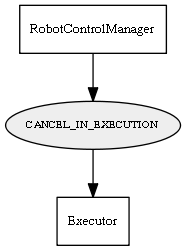

Global overview
All modules
All variables
All commands
Mission files
Pipelines
Variable: CANCEL_IN_EXECUTION
Variable info:
Variable name
Short description
Who publishes it?
Who subscribes to it?
CANCEL_IN_EXECUTION
Cancel current Navigation Plans (Executor)
RobotControlManager
Executor
Variable graph:

Detailed description:
Cancel current Navigation Plans (Executor)
Page generated by
Mooxygen 1.1.0
at Thu Jan 22 11:30:21 2015